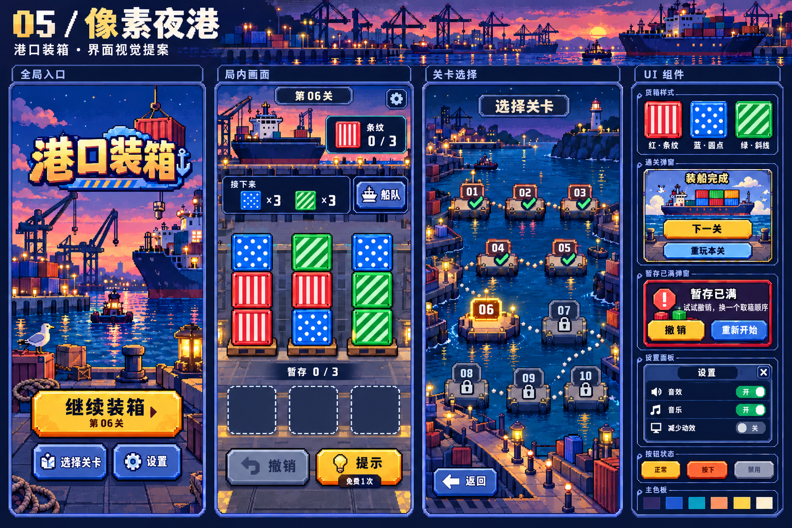
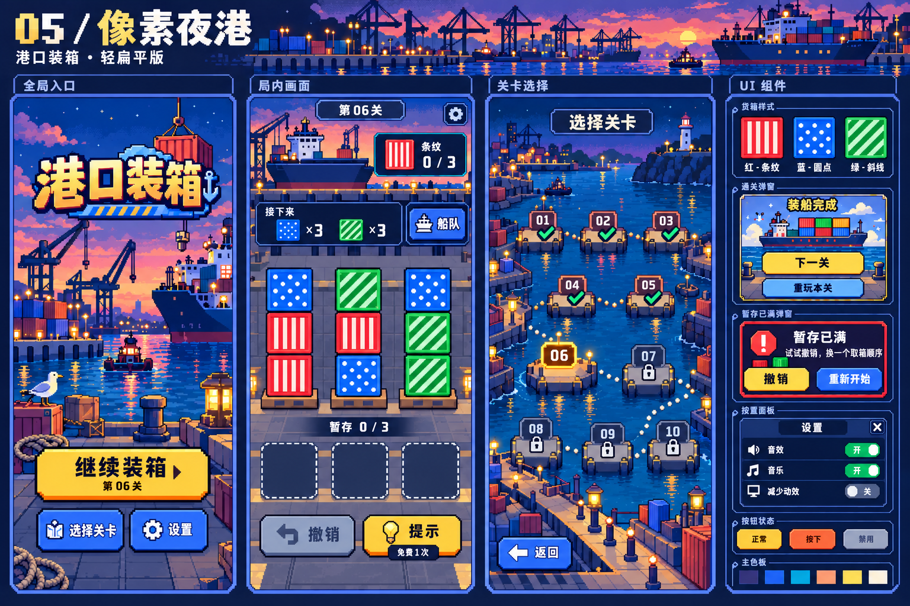

减弱厚度，保留辨识
货箱、按钮与面板减弱厚重倒角、高光和阴影，以清晰色块与边缘表达层级。
PORT CARGO / PIXEL NIGHT PORT
沿用像素夜港的暮色与灯光，让箱体、面板和按钮少一些厚度，画面更干净。保留像素网格、夜港配色，以及原有界面布局与功能表达。


货箱、按钮与面板减弱厚重倒角、高光和阴影，以清晰色块与边缘表达层级。
减少场景纹理碎点和透视厚度，保留夜港剪影、像素网格与暮色配色。
覆盖全局、局内、选关和 UI 组件；以原有布局与功能表达为基准，统一画面的扁平程度。